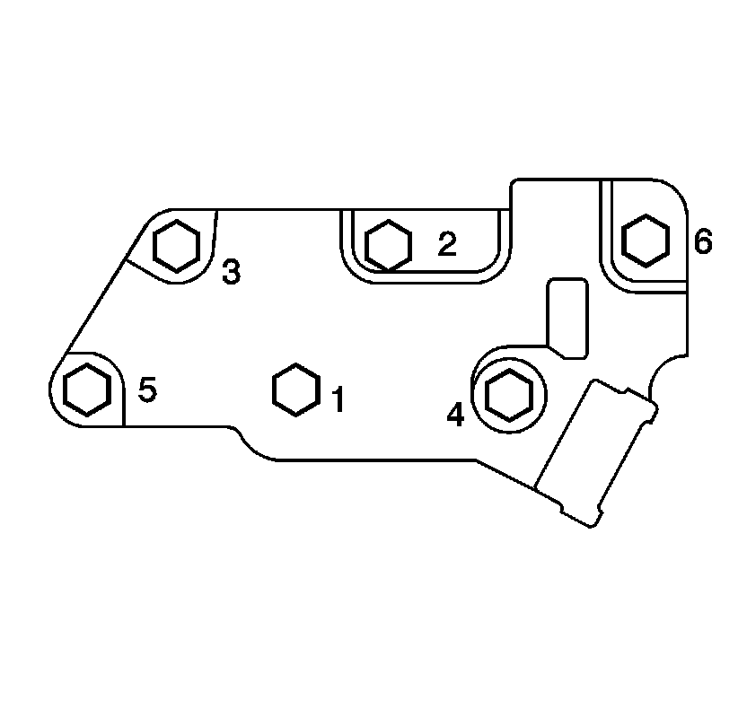
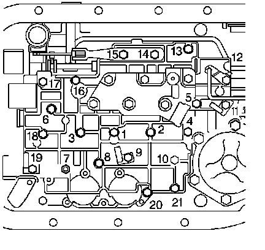

Control Valve Body Assembly Installation
Control Valve Body Assembly Installation
Tools Required
^ J 25025-5 Dial Indicator Mounting Post - M6 x 1.00
^ J 36850 Transjel(R) Lubricant
Notice: Use J 36850 or equivalent during assembly in order to retain checkballs or to lubricate components. Lubricants other than the recommended assembly lube changes the transmission fluid characteristics and causes undesirable shift conditions or filter clogging.
1. Install the 8 control valve body ball check valves (54) into the case passages.
Use J 36850 or equivalent in order to hold the control valve body ball check valves in place.
2. Install the TCC solenoid valve screen assembly (75) into the case.
3. Install the manual valve (319) into the control valve assembly.
4. Install the J 25025-5 into the transmission case.
5. Install the control valve body spacer plate gasket (48).
6. Install the control valve assembly (44). Attach the manual valve (319) to the detent lever (711) while installing the control valve assembly (44).

7. Install the transmission fluid pressure manual valve position switch (40).
8. Install the transmission fluid pressure manual valve position switch bolts (76) finger tight.

Notice: Refer to Fastener Notice.
9. Tighten the bolts in the order shown.
Tighten the bolts to 11 N.m (97 lb in).
10. Remove the J 25025-5.
11. Install the manual shift shaft detent spring assembly (41) and bolts (35).
12. Install the 2 wiring harness clamps (33) and bolts (35).
13. Install the lube oil pipe (39) with the short end into the control valve assembly.
14. Install the lube oil pipe retainer (37) and the bolt (35).
15. Install the remaining control valve body assembly bolts (35).

Notice: Tighten the control valve assembly bolts in a spiral pattern starting from the center. If the bolts are tightened in a random pattern, the valve bores may become distorted, which can inhibit valve operation.
16. Tighten the control valve body assembly bolts in the order shown.
Tighten the bolts to 11 N.m (97 lb in).